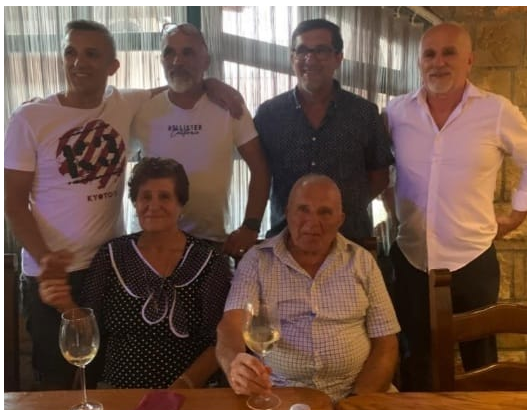

TREĆA GRANA PRVE OBITELJI TANDARA
3.0. Ante Ivanov (1730.–)
Ante Ivanov oženio se Matijom rođ. Brnas (G.N.). Imali su šestero djece: sinove Antu (1769.–1849.), Filipa (G.N.) i Pavla (1777.–) te kćeri Jaku (1771.–1837.), Lucu (G.N.) i Ružu (G.N.).
Šifre osoba: Matija rođ. Brnas (3.0-SP-1) | Ante (3.1) | Filip (3.2) | Pavle (3.0-S1) | Jaka (3.0-K1) | Luca (3.0-K2) | Ruža (3.0-K3)
Ante Ivanov bio je treći po redu sin prvog našeg zajedničkog predka Ivana rođ.c.1695.godine, nekoliko godina mlađi od brata Petra. Imao je tri sina: Antu, Filipa i Pavla te kćeri Jaku, Lucu i Ružu.
Ante Antin i Filip Antin nastavili su obiteljsku lozu, dok se za Pavla ne zna sudbina. O njemu postoji samo zapis o rođenju, bez ikakvih daljnjih podataka, što upućuje na to da je vjerojatno umro vrlo mlad ili da je napustio Ričice prije nego što je ostavio daljnji trag u župnim knjigama.
Najstariji sin Ante preselio se sa svojom obitelji u Zavelim oko 1819. godine, gdje se razvija njegova grana roda. Filip je ostao živjeti u Ričicama te se ondje najjasnije oblikovala njegova loza.
Antina loza ostala je čvrsto vezana uz Ričice i Zavelim, gdje se najjasnije razvijala tijekom 19. i 20. stoljeća. Iz ove jezgre potekao je najveći broj nositelja prezimena Tandara, pa se Antina linija smatra najrazvijenijom među Ivanovim potomcima.
U kasnijim naraštajima pojedini članovi ove grane raselili su se u druge dijelove Hrvatske, zatim u zemlje Europske unije, Kanadu, Sjedinjene Američke Države i Australiju, čime se obiteljska loza proširila daleko izvan prvotnog zavičaja.
PRVA PODGRANA ANTE ANTINA
3.1. Ante Antin (1769.–1849.)
Ante se oženio 1801. godine Matijom rođ. Jukić. Bio je najstariji sin Ante Ivanova. Imali su sinove Lovru, Miju i Petra (1821.–) te kćeri Peru (1802.–), Ružu (1804.–), Anticu (1807.–), Ivu (1808.–), drugu Anticu (1814.–) i Mariju (1823.–). Obiteljsku su lozu nastavili samo sinovi Lovro i Mijo. Mijini su nasljednici dobili nadimak TUCIĆI, dok su Lovrini nasljednici preko sina Marijana dobili nadimak LOVRINOVIĆI, a preko sina Križana – KRIŽANOVIĆI. Prema popisu iz 1819. godine, Ante je živio u Zavelimu, a njegov brat Filip u Ričicama. Njihovi su se potomci kasnije raselili po cijeloj Hrvatskoj, Europi, SAD-u i Kanadi.
Šifre osoba: Matija Jukić (3.1-SP-1) | Lovro (3.1.1) | Mijo – nadimak Tucići (3.1.2) | Petar (3.1-S1) | Pera (3.1-K1) | Ruža (3.1-K2) | Antica (3.1-K3) | Druga Antica (3.1-K4) | Iva (3.1-K5) | Marija (3.1-K6)
3.1.1. Lovro Antin (1811.–1903.)
Lovro Antin oženio se Matijom rođ. Sičenica. Imali su sinove Marijana i Križana.
Šifre osoba: Matija Sičenica (3.1.1-SP-1) | Marijan (3.1.1.1) | Križan (3.1.1.2)
LOZA MARIJANA LOVRINA – LOVRINOVIĆI
3.1.1.1. Marijan Lovrin (1836.–)
Marijan se oženio Matijom rođ. Kovač. Imali su sinove Juru (1867.–), Marka, Stipana (1873.–) i Jozu te kćeri Ivu (–1869.), Maru (1871.–1872.) i Matiju (1880.–1880.). Marijanovi potomci, preko sinova Marka i Jure, nose nadimak LOVRINOVIĆI, nastao po Marijanovu ocu Lovri.
Šifre osoba: Matija Kovač (3.1.1.1-SP-1) | Marko (3.1.1.1.1) | Jozo – nadimak Trošići (3.1.1.1.2) | Jure (3.1.1.1-S1) | Stipan (3.1.1.1-S2) | Iva (3.1.1.1-K1) | Mara (3.1.1.1-K2) | Matija (3.1.1.1-K3)
3.1.1.1.1. Marko Marijanov (1869.–)
Marko Marijanov oženio se Božicom rođ. Pušić. Imali su sina Mirka i kćer Ivu (1897.–).
Šifre osoba: Božica Pušić (3.1.1.1.1-SP-1) | Mirko (3.1.1.1.1.1) | Iva (3.1.1.1.1-K1)
3.1.1.1.1.1. Mirko Markov (1901.–)
Mirko Markov oženio se Anicom rođ. Kilić. Njihov sin Vladimir (1948.–1962.) umro je mlad.
Šifre osoba: Anica Kilić (3.1.1.1.1.1-SP-1) | Zaštićena osoba – 3.1.1.1.1.1.1 | Vladimir (3.1.1.1.1.1-S1) | Zaštićena osoba – 3.1.1.1.1.1-K1 | Zaštićena osoba – 3.1.1.1.1.1-K2 | Zaštićena osoba – 3.1.1.1.1.1-K3
3.1.1.1.1.1.1
Šifre osoba: Zaštićena osoba – 3.1.1.1.1.1.1-SP-1 | Zaštićena osoba – 3.1.1.1.1.1.1.1 | Zaštićena osoba – 3.1.1.1.1.1.1.2
3.1.1.1.1.1.1.1
Šifre osoba: Zaštićena osoba – 3.1.1.1.1.1.1.1-SP-1 | Zaštićena osoba – 3.1.1.1.1.1.1.1-S1 | Zaštićena osoba – 3.1.1.1.1.1.1.1-K1
3.1.1.1.1.1.1.2
Šifre osoba: Zaštićena osoba – 3.1.1.1.1.1.1.2-SP-1 | Zaštićena osoba – 3.1.1.1.1.1.1.2-S1 | Zaštićena osoba – 3.1.1.1.1.1.1.2-K1
3.1.1.1.2. Jozo Marijanov (1882.–1944.) – nadimak TROŠIĆI
Jozo Marijanov oženio se Ivom rođ. Kovač. Dobili su sinove Marijana i Luku.
Šifre osoba: Iva Kovač (3.1.1.1.2-SP-1) | Marijan (3.1.1.1.2.1) | Luka (3.1.1.1.2.2)
3.1.1.1.2.1. Marijan Jozin (1910.–1984.)
Marijan Jozin oženio se Anicom rođ. Budimir. Njihov sin Jozo (1942.–1948.) umro je kao šestogodišnje dijete.
Šifre osoba: Anica Budimir (3.1.1.1.2.1-SP-1) | Zaštićena osoba – 3.1.1.1.2.1.1 | Jozo (3.1.1.1.2.1-S1) | Zaštićena osoba – 3.1.1.1.2.1-K1 | Zaštićena osoba – 3.1.1.1.2.1-K2
3.1.1.1.2.1.1
Šifre osoba: Zaštićena osoba – 3.1.1.1.2.1.1-SP-1 | Zaštićena osoba – 3.1.1.1.2.1.1.1 | Zaštićena osoba – 3.1.1.1.2.1.1-K1 | Zaštićena osoba – 3.1.1.1.2.1.1-K2 | Zaštićena osoba – 3.1.1.1.2.1.1-K3
3.1.1.1.2.1.1.1
Šifre osoba: Zaštićena osoba – 3.1.1.1.2.1.1.1-SP-1 | Zaštićena osoba – 3.1.1.1.2.1.1.1-S1 | Zaštićena osoba – 3.1.1.1.2.1.1.1-K1
3.1.1.1.2.2. Luka Jozin (1912.–1987.)
Luka Jozin oženio se Anđom rođ. Kovač. Nije imao muških potomaka.
Šifre osoba: Anđa Kovač (3.1.1.1.2.2-SP-1) | Zaštićena osoba – 3.1.1.1.2.2-K1 | Zaštićena osoba – 3.1.1.1.2.2-K2 | Zaštićena osoba – 3.1.1.1.2.2-K3
LOZA KRIŽANA LOVRINA– KRIŽANOVIĆI
3.1.1.2. Križan Lovrin (1843.–1910.)
Križan se oženio Perom rođ. Budimir, s kojom je imao 15 djece, od toga deset sinova: Matu, Iliju (1867.–1875.), Antu, Jakova (1871.–1872.), Marijana (1873.–), Paška (–1886.), Jozu (1877.–), Ivana, Juru i Grgu (1887.–) te pet kćeri: Anicu (–1869.), Jakovicu (1868.–), drugu Anicu (1875.–1877.), Jozu (–1895.) i treću Anicu (1879.–). Sedmero Križanove djece umrlo je prije desete godine. Zanimljiv je podatak da je njegov drugi sin Ilija poginuo od uboda bika 1875. godine.
Šifre osoba: Pera Budimir (3.1.1.2-SP-1) | Mate (3.1.1.2.1) | Ante (3.1.1.2.2) | Ivan (3.1.1.2.3) | Jure – nadimak ĐULKO (3.1.1.2.4) | Ilija (3.1.1.2-S1) | Jakov (3.1.1.2-S2) | Marijan (3.1.1.2-S3) | Paško (3.1.1.2-S4) | Jozo (3.1.1.2-S5) | Grgo (3.1.1.2-S6) | Prva Anica (3.1.1.2-K1) | Druga Anica (3.1.1.2-K2) | Treća Anica (3.1.1.2-K3) | Jakovica (3.1.1.2-K4) | Joza (3.1.1.2-K5)
3.1.1.2.1. Mate Križanov (1866.–1948.)
Mate Križanov oženio se Ivom rođ. Pirić. Bio je Križanov najstariji sin. Imali su sinove Miju (1894.–1923.), Marijana i Jozu te kćer Matiju (1898.–1906.). Mijo se nikada nije oženio. Obitelj se preselila u Bektež kraj Kutjeva.
Šifre osoba: Iva Pirić (3.1.1.2.1-SP-1) | Marijan (3.1.1.2.1.1) | Jozo (3.1.1.2.1.2) | Mijo (3.1.1.2.1-S1) | Zaštićena osoba – 3.1.1.2.1-K1 | Matija (3.1.1.2.1-K2)
3.1.1.2.1.1. Marijan Matin (1902.–1974.)
Marijan Matin oženio se Anicom rođ. Maras. Njihov sin Jozo (1941.–2002.) nije se ženio. Obitelj se preselila u Bektež kraj Kutjeva.
Šifre osoba: Anica Maras (3.1.1.2.1.1-SP-1) | Zaštićena osoba – 3.1.1.2.1.1.1 | Zaštićena osoba – 3.1.1.2.1.1.2 | Zaštićena osoba – 3.1.1.2.1.1.3 | Jozo (3.1.1.2.1.1-S1) | Zaštićena osoba – 3.1.1.2.1.1-K1
3.1.1.2.1.1.1
Šifre osoba: Zaštićena osoba – 3.1.1.2.1.1.1-SP-1 | Zaštićena osoba – 3.1.1.2.1.1.1-SP-2 | Zaštićena osoba – 3.1.1.2.1.1.1.1 | Zaštićena osoba – 3.1.1.2.1.1.1-K1
3.1.1.2.1.1.1.1
Šifre osoba: Zaštićena osoba – 3.1.1.2.1.1.1.1-SP-1 | Zaštićena osoba – 3.1.1.2.1.1.1.1-SP-2 | Zaštićena osoba – 3.1.1.2.1.1.1.1-S1 | Zaštićena osoba – 3.1.1.2.1.1.1.1-S2 | Zaštićena osoba – 3.1.1.2.1.1.1.1-S3
3.1.1.2.1.1.2
Šifre osoba: Zaštićena osoba – 3.1.1.2.1.1.2-SP-1 | Zaštićena osoba – 3.1.1.2.1.1.2.1 | Zaštićena osoba – 3.1.1.2.1.1.2-K1
3.1.1.2.1.1.2.1
Šifre osoba: Zaštićena osoba – 3.1.1.2.1.1.2.1-SP-1 | Zaštićena osoba – 3.1.1.2.1.1.2.1-S1 | Zaštićena osoba – 3.1.1.2.1.1.2.1-K1
3.1.1.2.1.1.3
Šifre osoba: Zaštićena osoba – 3.1.1.2.1.1.3-SP-1 | Zaštićena osoba – 3.1.1.2.1.1.3-S1 | Zaštićena osoba – 3.1.1.2.1.1.3-K1 | Zaštićena osoba – 3.1.1.2.1.1.3-K2
3.1.1.2.1.2. Jozo Matin (1904.–1944.)
Jozo Matin oženio se Jakom rođ. Kilić i imao potomke. Bio je najmlađi sin Mate i Ive Pirić. Poginuo je u Drugom svjetskom ratu.
Šifre osoba: Jaka Kilić (3.1.1.2.1.2-SP-1) | Zaštićena osoba – 3.1.1.2.1.2.1 | Zaštićena osoba – 3.1.1.2.1.2.2 | Zaštićena osoba – 3.1.1.2.1.2-S1 | Zaštićena osoba – 3.1.1.2.1.2-K1
3.1.1.2.1.2.1
Šifre osoba: Zaštićena osoba – 3.1.1.2.1.2.1-SP-1 | Zaštićena osoba – 3.1.1.2.1.2.1-K1 | Zaštićena osoba – 3.1.1.2.1.2.1-K2 | Zaštićena osoba – 3.1.1.2.1.2.1-K3
3.1.1.2.1.2.2
Šifre osoba: Zaštićena osoba – 3.1.1.2.1.2.2-SP-1 | Zaštićena osoba – 3.1.1.2.1.2.2.1 | Zaštićena osoba – 3.1.1.2.1.2.2-K1
3.1.1.2.1.2.2.1
Šifre osoba: Zaštićena osoba – 3.1.1.2.1.2.2.1-SP-1 | Zaštićena osoba – 3.1.1.2.1.2.2.1-S1 | Zaštićena osoba – 3.1.1.2.1.2.2.1-K1 | Zaštićena osoba – 3.1.1.2.1.2.2.1-K2
3.1.1.2.2. Ante Križanov (1870.–1945.)
Ante Križanov oženio se Ivom rođ. Trogrlić. Bio je Križanov treći sin. Imali su sina Stipana (1898.–) te kćeri Jelu i Maru. Stipan se nakon Prvoga svjetskog rata, 1918. godine, preselio u Srbiju. Nije poznato je li imao potomke niti što se s njim kasnije dogodilo.
Šifre osoba: Iva Trogrlić (3.1.1.2.2-SP-1) | Stipan (3.1.1.2.2-S1) | Jela (3.1.1.2.2-K1) | Mara (3.1.1.2.2-K2)
3.1.1.2.3. Ivan Križanov (1881.–1920.)
Ivan Križanov oženio se Ružom rođ. Serdarušić, s kojom je imao sinove Antu (1911.–1916.), Križana i Marijana (1914.–1916.), koji je umro kao dijete, te kćeri Maru (1909.–) i Anu. Bio je osmi Križanov sin.
Šifre osoba: Ruža Serdarušić (3.1.1.2.3-SP-1) | Križan (3.1.1.2.3.1) | Ante (3.1.1.2.3-S1) | Marijan (3.1.1.2.3-S2) | Mara (3.1.1.2.3-K1) | Ana (3.1.1.2.3-K2)
3.1.1.2.3.1. Križan Ivanov (1916.–1944.)
Križan Ivanov oženio se Maricom rođ. Pušić. Poginuo je u Zagrebu 1944. godine. Obitelj živi u Vrpolju.
Šifre osoba: Marica Pušić (3.1.1.2.3.1-SP-1) | Ivan (3.1.1.2.3.1.1)
3.1.1.2.3.1.1. Ivan Križanov (1938.–2007.)
Ivan Križanov ženio se dvaput; supruge su mu bile Dragica rođ. Dragun i Anka rođ. Nikolić. Imao je potomke.
Šifre osoba: Dragica Dragun (3.1.1.2.3.1.1-SP-1) | Anka Nikolić (3.1.1.2.3.1.1-SP-2) | Zaštićena osoba – 3.1.1.2.3.1.1.1 | Zaštićena osoba – 3.1.1.2.3.1.1-K1 | Zaštićena osoba – 3.1.1.2.3.1.1-K2
3.1.1.2.3.1.1.1
Šifre osoba: Zaštićena osoba – 3.1.1.2.3.1.1.1-SP-1 | Zaštićena osoba – 3.1.1.2.3.1.1.1.1 | Zaštićena osoba – 3.1.1.2.3.1.1.1-S1
3.1.1.2.3.1.1.1.1
Šifre osoba: Zaštićena osoba – 3.1.1.2.3.1.1.1.1-SP-1 | Zaštićena osoba – 3.1.1.2.3.1.1.1.1-S1 | Zaštićena osoba – 3.1.1.2.3.1.1.1.1-K1 | Zaštićena osoba – 3.1.1.2.3.1.1.1.1-K2
3.1.1.2.4. Jure Križanov (1883.–1947.) – nadimak ĐULKO
Jure Križanov ženio se tri puta. U prvom braku bio je oženjen Perom rođ. Matišić, koja je bila iz kuće poznate hrvatske glazbene obitelji Matišić. Iz tog braka dobio je sina Josipa. Pera je umrla 1919. godine od španjolske gripe, koju su u narodu nazivali „grla”. Druga supruga bila je djevojka nepoznatog imena, rođ. Budić. Imali su sina Martina, koji je poginuo 1942. godine kod Bihaća. Treći je brak bio s Jozom rođ. Dragun, bez djece. Bio je deveti Križanov sin i rekorder po broju brakova među Tandarama.
Šifre osoba: Pera Matišić (3.1.1.2.4-SP-1) | Nepoznato ime rođ. Budić (3.1.1.2.4-SP-2) | Joza rođ. Dragun (3.1.1.2.4-SP-3) | Josip (3.1.1.2.4.1) | Martin (3.1.1.2.4-S1)
3.1.1.2.4.1. Josip Jurin (1911.–1946.)
Fotografije i dokumenti Josipa


Josip Jurin bio je oženjen Anicom rođ. Dragun (1911.–1989.). Imali su osmero djece: sinove Ivana (1933.–2025.), Milana (1942.–2003.) i Martina (1946.–1947.) te kćeri Slavu (1935.–1977.), Maru (1936.–2012.), Nedu (1939.–2025.), Matiju (1940.–) i Zlatu (1944.–1945.).
Šifre osoba: Anica Dragun (3.1.1.2.4.1-SP-1) | Ivan (3.1.1.2.4.1.1) | Milan (3.1.1.2.4.1.2) | Martin (3.1.1.2.4.1-S1) | Slava (3.1.1.2.4.1-K1) | Mara (3.1.1.2.4.1-K2) | Neda (3.1.1.2.4.1-K3) Matija (3.1.1.2.4.1-K4) | Zlata (3.1.1.2.4.1-K5)
Josip Jurin je tragično ubijen 1946. godine u okolnostima koje do danas nisu službeno razjašnjene. Prema svjedočenju očevidca događaja, Marijana Budimira (Mijana), koji je pred svoju smrt iznio iskaz Josipovoj supruzi Anici rođ. Dragun, ubojstvo je počinio Josipov prvi susjed, djelujući po nagovoru i uputama starijeg brata. Motiv je, prema tom svjedočenju, bila materijalna korist, jer je Josip u to vrijeme radio kao trgovac u zadruzi i imao pristup robi i zalihama koje su u poratnom razdoblju bile od velike vrijednosti.
U godinama nakon rata u javnosti se proširila lažna verzija da su Josipa ubili kamišari u povlačenju. Ta verzija nikada nije bila sudski potvrđena, a cijeli je slučaj — zbog poratnih prilika, nesređenih društvenih odnosa i namjernog manipuliranja informacijama — ostao neistražen i neprocesuiran. Ovdje se događaj prikazuje isključivo kao obiteljsko svjedočenje i povijesno iskustvo njegovih potomaka, a ne kao sudski utvrđena činjenica.
Josipova smrt i dugogodišnja neizvjesnost oko njezinih stvarnih okolnosti snažno su obilježile život njegove supruge, djece i kasnijih generacija. Posebno je teško bilo prihvatiti činjenicu da je čovjek koji je organizirao ubojstvo kasnije, tijekom života, na različite načine pomagao Josipovoj obitelji, što je kod Josipova sina Ivana — moga oca — stvorilo duboku unutarnju borbu i nemogućnost da do svoje smrti 2025. godine povjeruje u svjedočenje očevidca.
Napomena autora
Zbog proturječnih i manipulativnih javnih prikaza, naša je obitelj desetljećima bila izložena neugodnim etiketama koje nisu odgovarale onome što smo doznali iz iskaza svijedoka događaja i iz vlastitog obiteljskog svjedočenja. Tvrdnja da je Josip bio žrtva kamišara poslužila je tadašnjim predstavnicima vlasti kao osnova da mu se podigne spomenik i da se njegova smrt uključi u službena obilježavanja obljetnica bivše države. Time se među ljudima stvorio netočan dojam da je naša obitelj bila ideološki opredijeljena, što nije odgovaralo stvarnosti: u to vrijeme u narodu nije postojala izgrađena svijest o ideologiji, nego su nositelji kućanstava borili se svim snagama prehraniti mnogobrojnu obitelj u iznimno teškim vremenima.
Ovu napomenu navodim kako bih jasno odvojio službene i naknadno oblikovane narodne predaje od iskaza svjedoka događaja i obiteljskog pamćenja. Njezina svrha nije optuživanje današnjih potomaka počinitelja niti stvaranje neprijateljstva; između naših obitelji danas su sasvim normalni i prijateljski odnosi, koji se temelje na međusobnom poštovanju i razumijevanju.
Upravo zato ovaj zapis ima svoju vrijednost: on predstavlja povijesnu činjenicu obiteljskog pamćenja, događaj koji je desetljećima bio prikrivan, krivo interpretiran i uklopljen u narodne predaje koje nisu odražavale stvarne okolnosti. Ovo je uspomena koju nose potomci Josipa — ne kao teret, nego kao tihi podsjetnik na istinu koju su čuvali naši stari.
Bilježenjem ove istine ne traži se osuda niti se obnavljaju stare podjele. Naprotiv, ovim zapisom odajemo počast generaciji koja je sve to podnijela i ostavljamo prostor novima da žive slobodno, bez opterećenja prošlosti, ali s jasnom i poštenom spoznajom o tome što se doista dogodilo. Istina izrečena mirno, bez gorčine i bez namjere da ikoga povrijedi, jedini je način da se poštuje ono što je bilo i osigura normalan, zdrav nastavak života za sve koji dolaze poslije.
3.1.1.2.4.1.1. Ivan Josipov (1933.–2025.)
Fotografije i dokumenti Ivana


Ivan Josipov ženio se dvaput. U prvom braku s Matijom rođ. Pušić (1933.-1999.) dobio je troje djece: sina Juru (1956.–), još jednog sina čiji su podaci zaštićeni te kćer Mihaelu, krštenu kao Milena (1959.–). U drugom braku s Verkom rođ. Nikolovski (1945.-2022.) nije imao djece. Obitelj se preselila 1965. u Zagrebu.
Šifre osoba: Matija Pušić (3.1.1.2.4.1.1-SP-1) | Verka rođ. Nikolovski (3.1.1.2.4.1.1-SP-2) | Jure (3.1.1.2.4.1.1.1) | Zaštićena osoba – 3.1.1.2.4.1.1.2 | Mihaela (3.1.1.2.4.1.1-K1)
3.1.1.2.4.1.1.1. Jure Ivanov (1956.–)
Fotografije Jure


Jure Ivanov oženjen je Ružom rođ. Kosić (1955.-). Njihova su djeca sinovi Ivica Julio (1981.–) i Marin Tin (1983.–). Obitelj živi u Zagrebu.
Šifre osoba: Ruža rođ. Kosić (3.1.1.2.4.1.1.1-SP-1) | Ivica Julio (3.1.1.2.4.1.1.1.1) | Marin Tin (3.1.1.2.4.1.1.1.2)
3.1.1.2.4.1.1.1.1. Ivica Julio Jurin (1981.–)
Fotografije Ivice Julija


Ivica Julio Jurin oženjen je Anom rođ. Mikuš (1980.-). Njihova su djeca sin Vigo (2015.–) i kći Kaia (2018.–). Obitelj živi u Zagrebu.
Šifre osoba: Ana rođ. Mikuš (3.1.1.2.4.1.1.1.1-SP-1) | Vigo (3.1.1.2.4.1.1.1.1-S1) | Kaia (3.1.1.2.4.1.1.1.1-K1)
3.1.1.2.4.1.1.1.2. Marin Tin Jurin (1983.–)
Marin Tin Jurin oženjen je Ivanom rođ. Kereta (1983.-). Njihova su djeca sinovi David (2017.–) i Jakov (2019.–) te kći Laura (2023.–). Obitelj živi u Zagrebu.
Šifre osoba: Ivana rođ. Kereta (3.1.1.2.4.1.1.1.2-SP-1) | David (3.1.1.2.4.1.1.1.2-S1) | Jakov (3.1.1.2.4.1.1.1.2-S2) | Laura (3.1.1.2.4.1.1.1.2-K1)
3.1.1.2.4.1.1.2
Šifre osoba: Zaštićena osoba – 3.1.1.2.4.1.1.2-SP-1 | Filip (3.1.1.2.4.1.1.2-S1) | Leo (3.1.1.2.4.1.1.2-S2)
3.1.1.2.4.1.2. Milan Josipov (1942.–2003.)

Milan Josipov bio je oženjen Slavkom rođ. Budimir (1935.–2006.). Dobili su petero djece: sinove Jozu (1967.–) i Ivana (1974.–) te kćeri Mariju (1965.–), Anu (1970.–) i Marinu (1973.–). Obitelj se preselila u Posušje.
Šifre osoba: Slavka rođ. Budimir (3.1.1.2.4.1.2-SP-1) | Jozo (3.1.1.2.4.1.2.1) | Ivan (3.1.1.2.4.1.2.2) | Marija (3.1.1.2.4.1.2-K1) | Ana (3.1.1.2.4.1.2-K2) | Marina (3.1.1.2.4.1.2-K3)
3.1.1.2.4.1.2-K2. Ana Milanova (1970.–)

3.1.1.2.4.1.2.1. Jozo Milanov (1967.–)
Jozo Milanov oženjen je Vesnom rođ. Matić, s kojom ima kćeri Slavicu i Mateu te sina Martina. Obitelj živi u Posušju.
Šifre osoba: Vesna Matić (3.1.1.2.4.1.2.1-SP-1) | Matea (3.1.1.2.4.1.2.1.1) | Martin (3.1.1.2.4.1.2.1-S1) | Slavica (3.1.1.2.4.1.2.1-K1)
3.1.1.2.4.1.2.1.1. Matea Jozina (1999.–)
Podaci o živom članu dostupni su samo odobrenim korisnicima privatnog arhiva.
Šifre osoba: Ime nije poznato (3.1.1.2.4.1.2.1.1-SP-1) | Toma (3.1.1.2.4.1.2.1.1.1)
3.1.1.2.4.1.2.2. Ivan Milanov (1974.–)
Fotografije Ivana

Ivan Milanov oženjen je Ružicom rođ. Glavaš, s kojom ima sinove Davida i Milana te kćer Nataliju. Obitelj živi u Bielefeldu, u Njemačkoj.
Šifre osoba: Ružica Glavaš (3.1.1.2.4.1.2.2-SP-1) | David (3.1.1.2.4.1.2.2.1) | Milan (3.1.1.2.4.1.2.2-S1) | Natalija (3.1.1.2.4.1.2.2-K1)
3.1.1.2.4.1.2.2.1. David Ivanov (1995.–)
David Ivanov oženjen je Lizom rođ. Wörmann, s kojom ima kćer Ivanu. Obitelj živi u Bielefeldu, u Njemačkoj.
Šifre osoba: Liza rođ. Wörmann (3.1.1.2.4.1.2.2.1-SP-1) | Ivana (3.1.1.2.4.1.2.2.1-K1)
3.1.1.2.4.1.2.2-K1. Natalija Ivanova (2000.–)

3.1.1.2.4.1-K4. Matija Josipova (1940.–)

Matija Josipova udala se za Antu Budimira (G.N.). Rođena je 1940. godine. Imaju četvoricu sinova: Jozu (G.N.), Ivicu (G.N.), Mirka (G.N.) i Marija (G.N.). Obitelj je preselila u Splitu.
Šifre osoba: Ante Budimir (3.1.1.2.4.1-K4-SP-1) | Jozo (3.1.1.2.4.1-K4-S1) | Ivica (3.1.1.2.4.1-K4-S2) | Mirko (3.1.1.2.4.1-K4-S3) | Mario (3.1.1.2.4.1-K4-S4)
3.1.2. Mijo Antin (1818.–1878.) – nadimak TUCIĆI
Mijo Antin oženio se Mandom rođ. Martinović. Bio je drugi Antin sin. Imali su devetero djece: sinove Jozu, Antu (1852.–), Matu, Miju (1865.–) i Petra te kćeri Ivu (1856.–), Matiju (1858.–), Ružu (1859.–) i Anticu (1861.–). O sinu Miji nema drugih podataka osim rođenja. Potomci preko sinova Joze, Mate i Petra nose nadimak TUCIĆI, koji je nastao jer su članovi obitelji bili skloni ljubavnim avanturama.
Šifre osoba: Manda Martinović (3.1.2-SP-1) | Jozo (3.1.2.1) | Mate (3.1.2.2) | Petar (3.1.2.3) | Ante (3.1.2-S1) | Mijo (3.1.2-S2) | Iva (3.1.2-K1) | Matija (3.1.2-K2) | Ruža (3.1.2-K3) | Antica (3.1.2-K4)
LOZA JOZE
3.1.2.1. Jozo Mijin (1851.–)
Jozo Mijin oženio se Ivom rođ. Bilojelić. Imali su sedmero djece: sinove Antu, Jozu (1884.–) i Nikolu (1889.–1895.) te kćeri Matiju (1880.–), Jelu (1885.–), Maru (1895.–) i Ivu (1898.–). Sin Jozo nije se ženio, a jedino je Ante prenio prezime na potomke.
Šifre osoba: Iva Bilojelić (3.1.2.1-SP-1) | Ante (3.1.2.1.1) | Jozo (3.1.2.1-S1) | Nikola (3.1.2.1-S2) | Matija (3.1.2.1-K1) | Jela (3.1.2.1-K2) | Mara (3.1.2.1-K3) | Iva (3.1.2.1-K4)
3.1.2.1.1. Ante Jozin (1881.–1942.)
Ante Jozin oženio se Jelom rođ. Škorić. Imali su sinove Marijana, Matu (1920.–), Pilipa (1926.–1926.) i Miju te kćeri Jelu (1912.–), Maru (1915.–1915.), Katu (1922.–) i Milu (1925.–). Obiteljsku su lozu nastavili sinovi Marijan i Mijo.
Šifre osoba: Jela Škorić (3.1.2.1.1-SP-1) | Marijan – nadimak Đika (3.1.2.1.1.1) | Mijo (3.1.2.1.1.2) | Mate (3.1.2.1.1-S1) | Filip (3.1.2.1.1-S2) | Nikola (3.1.2.1.1-S3) | Jela (3.1.2.1.1-K1) | Mara (3.1.2.1.1-K2) | Kata (3.1.2.1.1-K3) | Mila (3.1.2.1.1-K4)
3.1.2.1.1.1. Marijan Antin (1908.–2003.) – nadimak ĐIKA
Marijan Antin oženio se Ivom rođ. Čorbić i imao potomke.
Šifre osoba: Iva Čorbić (3.1.2.1.1.1-SP-1) | Ivan (3.1.2.1.1.1.1) | Zaštićena osoba – 3.1.2.1.1.1.2 | Zaštićena osoba – 3.1.2.1.1.1-K1 | Zaštićena osoba – 3.1.2.1.1.1-K2 | Zaštićena osoba – 3.1.2.1.1.1-K3 | Zaštićena osoba – 3.1.2.1.1.1-K4
3.1.2.1.1.1.1. Ivan Marijanov (1939.–2024.)
Ivan Marijanov oženio se Anom rođ. Pušić. Živio je od 1939. do 2024. godine i imao potomke. Obitelj živi u Zagrebu.
Šifre osoba: Ana Pušić (3.1.2.1.1.1.1-SP-1) | Zdenko (3.1.2.1.1.1.1.1) | Zaštićena osoba – 3.1.2.1.1.1.1-K1
3.1.2.1.1.1.1.1
Šifre osoba: Zaštićena osoba – 3.1.2.1.1.1.1.1-SP-1 | Kristina rođ. Topić (3.1.2.1.1.1.1.1-SP-2) | Tomislav (3.1.2.1.1.1.1.1-S1) | Ana (3.1.2.1.1.1.1.1-K1)
3.1.2.1.1.1.2
Šifre osoba: Zaštićena osoba – 3.1.2.1.1.1.2-SP-1 | Zaštićena osoba – 3.1.2.1.1.1.2-SP-2 | Zaštićena osoba – 3.1.2.1.1.1.2.1 | Zaštićena osoba – 3.1.2.1.1.1.2-K1 | Zaštićena osoba – 3.1.2.1.1.1.2-K2 | Zaštićena osoba – 3.1.2.1.1.1.2-K3
3.1.2.1.1.1.2.1
Šifre osoba: Zaštićena osoba – 3.1.2.1.1.1.2.1-SP-1 | Zaštićena osoba – 3.1.2.1.1.1.2.1-K1 | Zaštićena osoba – 3.1.2.1.1.1.2.1-K2
3.1.2.1.1.2. Mijo Antin (1927.–)
Mijo Antin oženio se Mašom rođ. Gudelj. Povijesni podatak o ovoj osobi ostaje javno dostupan. Obitelj živi u Zagrebu.
Šifre osoba: Maša Gudelj (3.1.2.1.1.2-SP-1) | Zaštićena osoba – 3.1.2.1.1.2.1
3.1.2.1.1.2.1
Šifre osoba: Zaštićena osoba – 3.1.2.1.1.2.1-SP-1 | Zaštićena osoba – 3.1.2.1.1.2.1.1
3.1.2.1.1.2.1.1
Šifre osoba: Zaštićena osoba – 3.1.2.1.1.2.1.1-SP-1 | Zaštićena osoba – 3.1.2.1.1.2.1.1-S1 | Zaštićena osoba – 3.1.2.1.1.2.1.1-S2
LOZA MATE
3.1.2.2. Mate Mijin (1864.–1905.)
Mate Mijin ženio se dva puta. U prvom braku s Tomicom rođ. Kovač imao je sina Ivana (1888.–1895.). U drugom braku s Ivom rođ. Vlajčić imao je kćer Ivu (1897.–1914.) i sinove Martina (–1927.) i Juru. Nema podataka o tome je li se Martin ženio.
Šifre osoba: Tomica Kovač (3.1.2.2-SP-1) | Iva rođ. Vlajčić (3.1.2.2-SP-2) | Jure – nadimak ĐUKA (3.1.2.2.1) | Ivan (3.1.2.2-S1) | Martin (3.1.2.2-S2) | Iva (3.1.2.2-K1)
3.1.2.2.1. Jure Matin (1905.–1974.) – nadimak ĐUKA
Jure Matin oženio se Matijom rođ. Škorić i imao potomke.
Šifre osoba: Matija Škorić (3.1.2.2.1-SP-1) | Ante (3.1.2.2.1.1) | Zaštićena osoba – 3.1.2.2.1.2 | Mila (3.1.2.2.1-K1) | Stana (3.1.2.2.1-K2) | Zaštićena osoba – 3.1.2.2.1-K3
3.1.2.2.1.1. Ante Jurin (1933.–1999.)
Ante Jurin oženio se Milom rođ. Đikić i imao potomke. Njegov je sin Ivan živio od 1957. do 2002. godine. Obitelj se preselila u Đakovo.
Šifre osoba: Mila Đikić (3.1.2.2.1.1-SP-1) | Milan (3.1.2.2.1.1.1) | Zaštićena osoba – 3.1.2.2.1.1.2 | Ivan (3.1.2.2.1.1-S1) | Zaštićena osoba – 3.1.2.2.1.1-K1
3.1.2.2.1.1.1. Milan Antin (1958.–1995.)
Milan Antin oženio se Marijanom rođ. Erceg. Živio je od 1958. do 1995. godine i imao potomke. Obitelj živi u Đakovu.
Šifre osoba: Marijana Erceg (3.1.2.2.1.1.1-SP-1) | Zaštićena osoba – 3.1.2.2.1.1.1.1 | Zaštićena osoba – 3.1.2.2.1.1.1.2
3.1.2.2.1.1.1.1
Šifre osoba: Zaštićena osoba – 3.1.2.2.1.1.1.1-SP-1 | Zaštićena osoba – 3.1.2.2.1.1.1.1-S1
3.1.2.2.1.1.1.2
Šifre osoba: Zaštićena osoba – 3.1.2.2.1.1.1.2-SP-1 | Zaštićena osoba – 3.1.2.2.1.1.1.2-S1
3.1.2.2.1.1.2
Šifre osoba: Zaštićena osoba – 3.1.2.2.1.1.2-SP-1 | Zaštićena osoba – 3.1.2.2.1.1.2-S1 | Zaštićena osoba – 3.1.2.2.1.1.2-S2
3.1.2.2.1.2
Šifre osoba: Zaštićena osoba – 3.1.2.2.1.2-SP-1 | Zaštićena osoba – 3.1.2.2.1.2.1 | Zaštićena osoba – 3.1.2.2.1.2-K1 | Zaštićena osoba – 3.1.2.2.1.2-K2 | Zaštićena osoba – 3.1.2.2.1.2-K3
3.1.2.2.1.2.1
Šifre osoba: Zaštićena osoba – 3.1.2.2.1.2.1-SP-1 | Zaštićena osoba – 3.1.2.2.1.2.1-S1 | Zaštićena osoba – 3.1.2.2.1.2.1-K1
LOZA PETRA
3.1.2.3. Petar Mijin (1867.–)
Petar Mijin bio je oženjen Matijom rođ. Tandara, s kojom je dobio sinove Matu, Stipana, Antu (1911.–1911.) i Iliju te kćer Anđu (1911.–1911.).
Šifre osoba: Matija Tandara (3.1.2.3-SP-1) | Mate (3.1.2.3.1) | Stipan (3.1.2.3.2) | Ilija – nadimak GRABUNJAŠ (3.1.2.3.3) | Ante (3.1.2.3-S1) | Anđa (3.1.2.3-K1)
3.1.2.3.1. Mate Petrov (1902.–1991.)
Mate Petrov bio je oženjen Katom rođ. Cimerman i imao potomke. Obitelj se preselila u Kutjevo.
Šifre osoba: Kata Cimerman (3.1.2.3.1-SP-1) | Ivan (3.1.2.3.1.1) | Zaštićena osoba – 3.1.2.3.1-K1
3.1.2.3.1.1. Ivan Matin (1932.–2005.)
Ivan Matin oženio se Pavicom rođ. Kralik. Živio je od 1932. do 2005. godine i imao potomke. Obitelj živi u Kutjevu.
Šifre osoba: Pavica Kralik (3.1.2.3.1.1-SP-1) | Zaštićena osoba – 3.1.2.3.1.1.1 | Zaštićena osoba – 3.1.2.3.1.1-S1
3.1.2.3.1.1.1
Šifre osoba: Zaštićena osoba – 3.1.2.3.1.1.1-SP-1 | Zaštićena osoba – 3.1.2.3.1.1.1-K1 | Zaštićena osoba – 3.1.2.3.1.1.1-K2
3.1.2.3.2. Stipan Petrov (1908.–1989.)
Stipan Petrov bio je oženjen Jozom rođ. Malenica, s kojom je imao sina Ivana (1944.–) i kćer Ankicu (1946.–). Obitelj se preselila u Dugo Selo.
Šifre osoba: Joza Malenica (3.1.2.3.2-SP-1) | Ivan – 3.1.2.3.2.1 | Ankica – 3.1.2.3.2-K1
3.1.2.3.2.1
Šifre osoba: Zaštićena osoba – 3.1.2.3.2.1-SP-1 | Zaštićena osoba – 3.1.2.3.2.1.1 | Zaštićena osoba – 3.1.2.3.2.1-K1 | Zaštićena osoba – 3.1.2.3.2.1-K2 | Zaštićena osoba – 3.1.2.3.2.1-K3
3.1.2.3.2.1.1
Šifre osoba: Zaštićena osoba – 3.1.2.3.2.1.1-SP-1 | Zaštićena osoba – 3.1.2.3.2.1.1-S1 | Zaštićena osoba – 3.1.2.3.2.1.1-S2 | Zaštićena osoba – 3.1.2.3.2.1.1-K1
3.1.2.3.3. Ilija Petrov (1912.–2006.) – nadimak GRABUNJAŠ
Ilija Petrov bio je oženjen Anicom rođ. Škorić, s kojom je imao sinove Marijana (1939.–2020.) i Mirka (1945.–2024.) te kćeri Macu (1942.–), Nedu (1944.–) i Dragicu (1955.–).
Šifre osoba: Anica Škorić (3.1.2.3.3-SP-1) | Marijan – 3.1.2.3.3.1 | Mirko (3.1.2.3.3.2) | Zaštićena osoba – 3.1.2.3.3-K1 | Zaštićena osoba – 3.1.2.3.3-K2 | Zaštićena osoba – 3.1.2.3.3-K3
3.1.2.3.3.1 Marijan Ilijin (1939.-2020.)
Šifre osoba: Zaštićena osoba – 3.1.2.3.3.1-SP-1 | Nediljko(3.1.2.3.3.1-S1) | Zaštićena osoba – 3.1.2.3.3.1-S2 | Zaštićena osoba – 3.1.2.3.3.1-K1 | Zaštićena osoba – 3.1.2.3.3.1-K2 | Zaštićena osoba – 3.1.2.3.3.1-K3
3.1.2.3.3.2. Mirko Ilijin (1945.–2024.)
Mirko Ilijin oženio se Katom rođ. Kovač. Živio je od 1945. do 2024. godine i imao potomke. Obitelj se preselila u Zagreb.
Šifre osoba: Kata Kovač (3.1.2.3.3.2-SP-1) | Zaštićena osoba – 3.1.2.3.3.2.1 | Zaštićena osoba – 3.1.2.3.3.2.2 | Ante (3.1.2.3.3.2.3) | Zaštićena osoba – 3.1.2.3.3.2-K1 | Zaštićena osoba – 3.1.2.3.3.2-K2
3.1.2.3.3.2.1
Šifre osoba: Zaštićena osoba – 3.1.2.3.3.2.1-SP-1 | Zaštićena osoba – 3.1.2.3.3.2.1-S1 | Zaštićena osoba – 3.1.2.3.3.2.1-K1 | Zaštićena osoba – 3.1.2.3.3.2.1-K2
3.1.2.3.3.2.2
Šifre osoba: Zaštićena osoba – 3.1.2.3.3.2.2-SP-1 | Zaštićena osoba – 3.1.2.3.3.2.2-K1 | Zaštićena osoba – 3.1.2.3.3.2.2-K2
3.1.2.3.3.2.3. Ante Mirkov (1967.–)

Ante Mirkov oženjen je i ima troje djece. Podaci o njegovoj supruzi i djeci zaštićeni su i dostupni samo odobrenim korisnicima privatnog arhiva.
Ante Tandara (1971., Zavelim) istaknuti je hrvatski branitelj, pripadnik postrojbe Tigrovi i predsjednik HVIDR-e Grada Zagreba. Kao 90-postotni hrvatski vojni invalid, svoj je život nakon Domovinskog rata posvetio zastupanju branitelja, ratnih vojnih invalida i obitelji stradalnika, te je prepoznat kao jedan od najangažiranijih i najdosljednijih predstavnika braniteljske zajednice u Zagrebu.
U javnom prostoru ističe se kao artikuliran, organiziran i pouzdan glas branitelja, s jasnim stavovima i snažnim osjećajem odgovornosti prema zajednici koju predstavlja. Njegov rad u HVIDR-i obilježen je organizacijskim sposobnostima, energijom i spremnošću da se zauzme za prava i dostojanstvo hrvatskih branitelja.
Prije Domovinskog rata Ante je bio zapažen u navijačkoj skupini Bad Blue Boys, gdje je svojim organizacijskim sposobnostima, autoritetom i utjecajem pridonio oblikovanju navijačkog pokreta Dinama u predratnim godinama. Bio je jedan od ključnih ljudi u organizaciji navijačkih aktivnosti, okupljanja i koordinacije navijača, što je u to vrijeme imalo veliku važnost za identitet kluba i navijačke zajednice.
Njegova uloga posebno je vidljiva u razdoblju koje je prethodilo povijesnim događajima na stadionima i oko njih, uključujući i vrijeme neposredno prije 13. svibnja 1990., kada je navijački pokret Dinama postao simbol otpora, zajedništva i buđenja nacionalne svijesti.
Šifre osoba: Zaštićena osoba – 3.1.2.3.3.2.3-SP-1 | Zaštićena osoba – 3.1.2.3.3.2.3-K1 | Zaštićena osoba – 3.1.2.3.3.2.3-K2 | Zaštićena osoba – 3.1.2.3.3.2.3-K3
DRUGA PODGRANA FILIPA ANTINA
3.2. Filip Antin (G.N.)
Filip Antin oženio se Matijom rođ. Parlov, s kojom je imao sinove Martina, Matu (1814.–) i Ivana (1823.–) te kćeri Jozu, Jelu, Jurku (1811.–), Anticu i Ružu (1821.–1822.). Bio je drugi sin Ante Ivanova. Za razliku od svojega brata Ante, ostao je živjeti u Ričicama. Za Ivana i Matu postoje samo podaci o rođenju, pa se pretpostavlja da su umrli mladi ili da su se odselili iz Ričica.
Šifre osoba: Matija Parlov (3.2-SP-1) | Martin (3.2.1) | Mate (3.2-S1) | Ivan (3.2-S2) | Joza (3.2-K1) | Jela (3.2-K2) | Jurka (3.2-K3) | Antica (3.2-K4) | Ruža (3.2-K5)
3.2.1. Martin Filipov (1811.–)
Martin Filipov bio je oženjen Mandom rođ. Manenica, s kojom je imao sinove Jerku, Iliju, Ivana (1847.–1851.), Martina (–1853.) i još jednog Ivana (1852.–) te kćeri Tomicu (–1870.), Luciju (1845.–), drugu Luciju (1850.–) i Ivu (1854.–). Lozu su nastavili samo sinovi Jerko i Ilija.
Šifre osoba: Manda Manenica (3.2.1-SP-1) | Jerko (3.2.1.1) | Ilija (3.2.1.2) | Ivan (3.2.1-S1) | Martin (3.2.1-S2) | Drugi Ivan (3.2.1-S3) | Tomica (3.2.1-K1) | Lucija (3.2.1-K2) | Druga Lucija (3.2.1-K3) | Iva (3.2.1-K4)
LOZA JERKA
3.2.1.1. Jerko Martinov (1839.–)
Jerko Martinov bio je oženjen Ivom rođ. Topalušić, s kojom je dobio sinove Martina, Luku (1869.–1869.) i Ivana (1872.–).
Šifre osoba: Iva Topalušić (3.2.1.1-SP-1) | Martin (3.2.1.1.1) | Ivan (3.2.1.1.2) | Luka (3.2.1.1-S1)
3.2.1.1.1. Martin Jerkin (1865.–)
Martin Jerkin bio je oženjen Ivom rođ. Kovač, s kojom je imao kćeri Matiju (1893.–), Maru (1895.–1899.) i Ivu (1905.–).
Šifre osoba: Iva Kovač (3.2.1.1.1-SP-1) | Matija (3.2.1.1.1-K1) | Mara (3.2.1.1.1-K2) | Iva (3.2.1.1.1-K3)
3.2.1.1.2. Ivan Jerkin (1872.–)
Ivan Jerkin bio je oženjen Jakom rođ. Martinović, s kojom je imao sinove Matu i Martina te kćeri Anu (1900.–), Tomicu (1907.–1908.) i drugu Tomicu (1910.–), nakon što je prva kćer Tomica preminula u drugoj godini života. Često se događalo da roditelji, nakon smrti prvog djeteta, sljedećem djetetu istog spola daju isto ime.
Šifre osoba: Jaka Martinović (3.2.1.1.2-SP-1) | Mate – nadimak Pikići (3.2.1.1.2.1) | Martin (3.2.1.1.2.2) | Ana (3.2.1.1.2-K1) | Tomica (3.2.1.1.2-K2) | Druga Tomica (3.2.1.1.2-K3)
3.2.1.1.2.1. Mate Ivanov (1898.–) – nadimak PIKIĆI
Mate Ivanov oženio se Matijom rođ. Lažeta. Povijesni podatak o ovoj osobi ostaje javno dostupan. Obitelj se preselila u Split.
Šifre osoba: Matija Lažeta (3.2.1.1.2.1-SP-1) | Nikola (3.2.1.1.2.1.1) | Mirko (3.2.1.1.2.1.2) | Zaštićena osoba – 3.2.1.1.2.1.3 | Milica (3.2.1.1.2.1-K1) | Zaštićena osoba – 3.2.1.1.2.1-K2
3.2.1.1.2.1.1. Nikola Matin (1927.–1990.)
Nikola Matin oženio se Matijom rođ. Kilić. Živio je od 1927. do 1990. godine i imao potomke. Obitelj živi u Splitu.
Šifre osoba: Matija Kilić (3.2.1.1.2.1.1-SP-1) | Zaštićena osoba – 3.2.1.1.2.1.1.1 | Zaštićena osoba – 3.2.1.1.2.1.1.2 | Vera (3.2.1.1.2.1.1-K1) | Marija (3.2.1.1.2.1.1-K2)
3.2.1.1.2.1.1.1
Šifre osoba: Zaštićena osoba – 3.2.1.1.2.1.1.1-SP-1 | Zaštićena osoba – 3.2.1.1.2.1.1.1-SP-2 | Zaštićena osoba – 3.2.1.1.2.1.1.1-S1 | Zaštićena osoba – 3.2.1.1.2.1.1.1-S2 | Zaštićena osoba – 3.2.1.1.2.1.1.1-K1 | Zaštićena osoba – 3.2.1.1.2.1.1.1-K2
3.2.1.1.2.1.1.2
Šifre osoba: Zaštićena osoba – 3.2.1.1.2.1.1.2-SP-1 | Zaštićena osoba – 3.2.1.1.2.1.1.2-S1 | Zaštićena osoba – 3.2.1.1.2.1.1.2-S2
3.2.1.1.2.1.2. Mirko Matin (1932.–2005.)
Mirko Matin oženio se Anđelkom Dragicom rođ. Mršić. Živio je od 1932. do 2005. godine i imao potomke. Obitelj živi u Splitu.
Šifre osoba: Anđelka Dragicom Mršić (3.2.1.1.2.1.2-SP-1) | Zaštićena osoba – 3.2.1.1.2.1.2.1 | Zaštićena osoba – 3.2.1.1.2.1.2.2 | Zaštićena osoba – 3.2.1.1.2.1.2.3
3.2.1.1.2.1.2.1
Šifre osoba: Zaštićena osoba – 3.2.1.1.2.1.2.1-SP-1 | Zaštićena osoba – 3.2.1.1.2.1.2.1-S1 | Zaštićena osoba – 3.2.1.1.2.1.2.1-S2 | Zaštićena osoba – 3.2.1.1.2.1.2.1-S3
3.2.1.1.2.1.2.2
Šifre osoba: Zaštićena osoba – 3.2.1.1.2.1.2.2-SP-1 | Zaštićena osoba – 3.2.1.1.2.1.2.2-S1 | Zaštićena osoba – 3.2.1.1.2.1.2.2-S2
3.2.1.1.2.1.2.3
Šifre osoba: Zaštićena osoba – 3.2.1.1.2.1.2.3-SP-1 | Zaštićena osoba – 3.2.1.1.2.1.2.3-S1 | Zaštićena osoba – 3.2.1.1.2.1.2.3-K1 | Zaštićena osoba – 3.2.1.1.2.1.2.3-K2
3.2.1.1.2.1.3
Šifre osoba: Zaštićena osoba – 3.2.1.1.2.1.3-SP-1 | Zaštićena osoba – 3.2.1.1.2.1.3.1 | Zaštićena osoba – 3.2.1.1.2.1.3-K1
3.2.1.1.2.1.3.1
Šifre osoba: Zaštićena osoba – 3.2.1.1.2.1.3.1-SP-1 | Zaštićena osoba – 3.2.1.1.2.1.3.1-S1 | Zaštićena osoba – 3.2.1.1.2.1.3.1-S2 | Zaštićena osoba – 3.2.1.1.2.1.3.1-S3
3.2.1.1.2.2. Martin Ivanov (1904.–)
Martin Ivanov oženio se Anicom rođ. Lekić. Povijesni podatak o ovoj osobi ostaje javno dostupan. Obitelj se preselila u Bjelovar.
Šifre osoba: Anica Lekić (3.2.1.1.2.2-SP-1) | Ivan (3.2.1.1.2.2.1) | Zaštićena osoba – 3.2.1.1.2.2.2 | Marijan (3.2.1.1.2.2-S1) | Mara (3.2.1.1.2.2-K1) | Matija (3.2.1.1.2.2-K2)
3.2.1.1.2.2.1. Ivan Martinov (1932.–1996.)
Ivan Martinov oženio se Anom rođ. Radmanić. Živio je od 1932. do 1996. godine i imao potomke. Obitelj živi u Bjelovaru.
Šifre osoba: Ana Radmanić (3.2.1.1.2.2.1-SP-1) | Zaštićena osoba – 3.2.1.1.2.2.1.1
3.2.1.1.2.2.1.1
Šifre osoba: Zaštićena osoba – 3.2.1.1.2.2.1.1-SP-1 | Zaštićena osoba – 3.2.1.1.2.2.1.1-S1 | Zaštićena osoba – 3.2.1.1.2.2.1.1-K1
3.2.1.1.2.2.2
Šifre osoba: Zaštićena osoba – 3.2.1.1.2.2.2-SP-1 | Zaštićena osoba – 3.2.1.1.2.2.2.1
3.2.1.1.2.2.2.1
Šifre osoba: Zaštićena osoba – 3.2.1.1.2.2.2.1-SP-1 | Zaštićena osoba – 3.2.1.1.2.2.2.1-K1
LOZA ILIJE
3.2.1.2. Ilija Martinov (1843.–)
Ilija Martinov bio je oženjen Lucom rođ. Tavra, s kojom je imao sinove Matu, Ivana (1877.–1883.) i Šimuna (1880.–1880.) te kćeri Tomicu (1881.–1882.), drugu Tomicu (1884.–), Ivu (1886.–1886.) i Maru (1887.–1888.). Ivan je preminuo u šestoj godini života, a Šimun ubrzo nakon rođenja.
Šifre osoba: Luca Tavra (3.2.1.2-SP-1) | Mate – nadimak RUMIĆI (3.2.1.2.1) | Ivan (3.2.1.2-S1) | Šimun (3.2.1.2-S2) | Tomica (3.2.1.2-K1) | Druga Tomica (3.2.1.2-K2) | Iva (3.2.1.2-K3) | Mara (3.2.1.2-K4)
3.2.1.2.1. Mate Ilijin (1875.–) – nadimak RUMIĆI
Mate Ilijin bio je oženjen Marom rođ. Topalušić, s kojom je imao sinove Ivana (1899.–), Božu (1902.–), Miju i Tomu te kćeri Tomicu (1900.–), Maru (1906.–) i drugu Maru (1912.–). Za Ivana i Božu postoje samo podaci o godini rođenja, a nije poznato jesu li umrli mladi ili se odselili iz Ričica.
Šifre osoba: Mara Topalušić (3.2.1.2.1-SP-1) | Mijo (3.2.1.2.1.1) | Toma (3.2.1.2.1.2) | Ivan (3.2.1.2.1-S1) | Božo (3.2.1.2.1-S2) | Tomica (3.2.1.2.1-K1) | Mara (3.2.1.2.1-K2) | Druga Mara (3.2.1.2.1-K3)
3.2.1.2.1.1. Mijo Matin (1909.–1945.) – nadimak RUMIĆI
Mijo Matin bio je oženjen Jozom rođ. Štrljić i imao potomke. Obitelj se preselila u Predavac kraj Bjelovara.
Šifre osoba: Joza Štrljić (3.2.1.2.1.1-SP-1) | Zaštićena osoba – 3.2.1.2.1.1.1 | Zaštićena osoba – 3.2.1.2.1.1.2
3.2.1.2.1.1.1
Šifre osoba: Zaštićena osoba – 3.2.1.2.1.1.1-SP-1 | Zaštićena osoba – 3.2.1.2.1.1.1-SP-2 | Zaštićena osoba – 3.2.1.2.1.1.1.1 | Zaštićena osoba – 3.2.1.2.1.1.1.2 | Zaštićena osoba – 3.2.1.2.1.1.1.3 | Zaštićena osoba – 3.2.1.2.1.1.1.4 | Zaštićena osoba – 3.2.1.2.1.1.1.5
3.2.1.2.1.1.1.1
Šifre osoba: Zaštićena osoba – 3.2.1.2.1.1.1.1-SP-1 | Zaštićena osoba – 3.2.1.2.1.1.1.1.1 | Zaštićena osoba – 3.2.1.2.1.1.1.1-S1
3.2.1.2.1.1.1.1.1
Šifre osoba: Zaštićena osoba – 3.2.1.2.1.1.1.1.1-SP-1 | Zaštićena osoba – 3.2.1.2.1.1.1.1.1-S1 | Zaštićena osoba – 3.2.1.2.1.1.1.1.1-K1
3.2.1.2.1.1.1.2
Šifre osoba: Zaštićena osoba – 3.2.1.2.1.1.1.2-SP-1 | Zaštićena osoba – 3.2.1.2.1.1.1.2-K1 | Zaštićena osoba – 3.2.1.2.1.1.1.2-K2 | Zaštićena osoba – 3.2.1.2.1.1.1.2-K3
3.2.1.2.1.1.1.3
Šifre osoba: Zaštićena osoba – 3.2.1.2.1.1.1.3-SP-1 | Zaštićena osoba – 3.2.1.2.1.1.1.3-S1 | Zaštićena osoba – 3.2.1.2.1.1.1.3-S2 | Zaštićena osoba – 3.2.1.2.1.1.1.3-S3 | Zaštićena osoba – 3.2.1.2.1.1.1.3-K1
3.2.1.2.1.1.1.4
Šifre osoba: Zaštićena osoba – 3.2.1.2.1.1.1.4-SP-1 | Zaštićena osoba – 3.2.1.2.1.1.1.4-S1 | Zaštićena osoba – 3.2.1.2.1.1.1.4-S2 | Zaštićena osoba – 3.2.1.2.1.1.1.4-K1 | Zaštićena osoba – 3.2.1.2.1.1.1.4-K2
3.2.1.2.1.1.1.5
Šifre osoba: Zaštićena osoba – 3.2.1.2.1.1.1.5-SP-1 | Zaštićena osoba – 3.2.1.2.1.1.1.5-S1 | Zaštićena osoba – 3.2.1.2.1.1.1.5-K1
3.2.1.2.1.1.2
Šifre osoba: Zaštićena osoba – 3.2.1.2.1.1.2-SP-1 | Zaštićena osoba – 3.2.1.2.1.1.2.1 | Zaštićena osoba – 3.2.1.2.1.1.2.2 | Zaštićena osoba – 3.2.1.2.1.1.2-K1 | Zaštićena osoba – 3.2.1.2.1.1.2-K2
3.2.1.2.1.1.2.1
Šifre osoba: Zaštićena osoba – 3.2.1.2.1.1.2.1-SP-1 | Zaštićena osoba – 3.2.1.2.1.1.2.1-S1
3.2.1.2.1.1.2.2
Šifre osoba: Zaštićena osoba – 3.2.1.2.1.1.2.2-SP-1 | Zaštićena osoba – 3.2.1.2.1.1.2.2.1 | Zaštićena osoba – 3.2.1.2.1.1.2.2-K1 | Zaštićena osoba – 3.2.1.2.1.1.2.2-K2
3.2.1.2.1.1.2.2.1
Šifre osoba: Zaštićena osoba – 3.2.1.2.1.1.2.2.1-SP-1 | Zaštićena osoba – 3.2.1.2.1.1.2.2.1-S1
3.2.1.2.1.2. Toma Matin (G.N.) – nadimak RUMIĆI
Toma Matin bio je oženjen Tomicom rođ. Tandara. Među njihovom djecom bili su Petar (1925.–1985.), Slavko (1930.–2006.), Ante (1942.–2011.) i Mate (1944.–2007.). Podaci o ostalim, vjerojatno živim članovima obitelji nalaze se u privatnom arhivu.
Šifre osoba: Tomica Tandara (3.2.1.2.1.2-SP-1) | Petar (3.2.1.2.1.2.1) | Slavko (3.2.1.2.1.2.2) | Ante (3.2.1.2.1.2.3) | Mate (3.2.1.2.1.2.4) | Marijan (3.2.1.2.1.2-S1) | Zaštićena osoba – 3.2.1.2.1.2-K1 | Zaštićena osoba – 3.2.1.2.1.2-K2 | Zaštićena osoba – 3.2.1.2.1.2-K3 | Zaštićena osoba – 3.2.1.2.1.2-K4
3.2.1.2.1.2.1. Petar Tomin (1925.–1985.)
Petar Tomin oženio se Katom rođ. Novosel i imao potomke.
Šifre osoba: Kata Novosel (3.2.1.2.1.2.1-SP-1) | Zaštićena osoba – 3.2.1.2.1.2.1.1
3.2.1.2.1.2.1.1
Šifre osoba: Zaštićena osoba – 3.2.1.2.1.2.1.1-SP-1 | Zaštićena osoba – 3.2.1.2.1.2.1.1-S1 | Sabina (3.2.1.2.1.2.1.1-K1)
3.2.1.2.1.2.1.1-K1. Sabina Tandara Knezović (1978.–)

Sabina Tandara Knezović jedna je od najprepoznatljivijih hrvatskih televizijskih novinarki, dugogodišnje istaknuto lice RTL-a. Tijekom svoje profesionalne karijere ostvarila je niz zapaženih intervjua s najvažnijim političkim ličnostima, čime je izgradila reputaciju novinarke koja precizno, profesionalno i jasno otvara ključne društvene i političke teme.
U redakcijskom radu ističe se kao kreativna, vrlo dobro organizirana i pouzdana osoba, s izraženim osjećajem za strukturu vijesti, dinamiku emisije i kvalitetu informativnog sadržaja. Njezin urednički doprinos vidljiv je u kreiranju i oblikovanju dnevnih vijesti, gdje svojim iskustvom i profesionalnim pristupom utječe na izbor tema i način njihove prezentacije.
Sabina je zapažena i istaknuta osoba hrvatskog javnog prostora, čija prisutnost, profesionalnost i medijski rad nadilaze okvire standardnog novinarstva. Svojim javnim djelovanjem postala je najzaslužnija suvremena promotorka prezimena Tandara u Hrvatskoj, pridonoseći njegovoj prepoznatljivosti, ugledu i pozitivnoj percepciji u široj javnosti.
3.2.1.2.1.2.2. Slavko Tomin (1930.–2006.)
Slavko Tomin oženio se Savkom rođ. Vukobratović. Živio je od 1930. do 2006. godine i imao potomke.
Šifre osoba: Savka Vukobratović (3.2.1.2.1.2.2-SP-1) | Zaštićena osoba – 3.2.1.2.1.2.2-S1
3.2.1.2.1.2.3. Ante Tomin (1942.–2011.)
Ante Tomin oženio se Zlatom rođ. Vučemil. Živio je od 1942. do 2011. godine i imao potomke.
Šifre osoba: Zlata Vučemil (3.2.1.2.1.2.3-SP-1) | Zaštićena osoba – 3.2.1.2.1.2.3.1
3.2.1.2.1.2.3.1
Šifre osoba: Zaštićena osoba – 3.2.1.2.1.2.3.1-SP-1 | Zaštićena osoba – 3.2.1.2.1.2.3.1-S1 | Zaštićena osoba – 3.2.1.2.1.2.3.1-K1 | Zaštićena osoba – 3.2.1.2.1.2.3.1-K2
3.2.1.2.1.2.4. Mate Tomin (1944.–2007.)
Mate Tomin oženio se Tonkom rođ. Vukičević. Živio je od 1944. do 2007. godine i imao potomke.
Šifre osoba: Tonka Vukičević (3.2.1.2.1.2.4-SP-1) | Zaštićena osoba – 3.2.1.2.1.2.4.1
3.2.1.2.1.2.4.1
Šifre osoba: Zaštićena osoba – 3.2.1.2.1.2.4.1-SP-1 | Zaštićena osoba – 3.2.1.2.1.2.4.1-S1 | Zaštićena osoba – 3.2.1.2.1.2.4.1-S2
Interaktivni dijagram Antine grane
Otvorite pripadajući interaktivni rodoslovni dijagram ove obiteljske grane.
Napomena!
Cjelovito rodoslovno stablo ove obiteljske grane nalazi se u desnom interaktivnom dijagramu na početnoj stranici Digitalnog arhiva roda Tandara.
Na početnoj stranici odaberite okvir pod nazivom „Antina grana”. Klikom na taj okvir otvara se odgovarajući dio rodoslovnog stabla s potomcima ove grane.